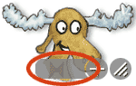
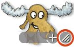
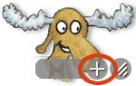
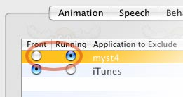

Uli's Moose - Help
No, you don't have to start the Moose by hand. You can tell the Moose to automatically start up each time Finder is loaded ("at login time"):
- Choose from the menu.
- Click the Options button to switch to the Options page.
- Click the check-box to the left of Launch Moose at Login so it is marked with a little hook.
From now on, the Moose will automatically start up.
You probably downloaded a new version of the Moose and forgot to remove the old one. Simply delete one of the two Mooses:
- Click on each of the Moose icons in the dock while holding down the Command-key.
- Two Finder windows will open, showing the actual Moose application files.
- Select the two files' icons and select from the menu.
- Compare the two applications' information to determine the newer one.
- Double-click the older one's icon and choose from the menu.
- Drag the older file to the trash to delete it.
Note: If for some reason you do not wish to delete the other Moose (or you can't because an administrator installed it), you can also double-click the older Moose's icon to make it frontmost and then go to the Options page (called Behaviors in older versions) of the Settings window and uncheck the Launch Moose at Login checkbox. Then quit the old Moose as mentioned above and you'll be left with a single Moose.
To get rid of the Moose, all you have to do is find, quit and delete the
Moose application file.
- Click on the Moose icon in the dock while holding down the Command-key.
- A Finder window will open, showing the actual Moose application file.
- Double-click the Moose icon and choose from the menu.
- Drag the Moose file in the Finder window to the trash to delete it.
The Moose is very disappointed that you would ever consider such harsh action. If you do not want to entirely delete the Moose,
you can also simply deactivate the
Launch at Login checkbox on the
Options page
of the Moose settings window and quit the Moose using the menu item from the menu.
Then the Moose won't show again until you double-click the Moose application file.
When you download an animation, it comes as a file with a name suffix of ".nose". To install it, simply double-click the animation file's icon. The Moose will now start up if it isn't already running, and install the new animation, and display a message telling you what it did. Once an animation has been installed, you can trash the original ".nose"-file.
Note: When an animation is installed, the Moose in reality simply copies the animation file into the Animations-folder inside the Moose folder of your Library folder's Application Support folder (~/Library/Application Support/Moose/Animations/), from where you can delete it again, should you want to get rid of an animation.
Note: As of 3.5, Uli's Moose only supports the newer animations with ".nose" filename suffix. If you have an older animation for version 2.0 through 3.0.5, please get in contact with the author to have it converted to the new format.
When you download a phrase file, it comes as a file with a name suffix of ".phraseFile". To install it, simply double-click the phrase file's icon. The Moose will now start up if it isn't already running, and install the new phrases, and display a message telling you what it did. Once a phrase file has been installed, you can trash the original ".phraseFile"-file.
Note: Prior to Uli's Moose 3.5, phrase files had the name suffix ".txt", just like regular text files. To install such an old phrase file, drag the file's icon onto the Moose's icon in the dock, instead of double-clicking its icon. Note that the icon may not properly highlight when you drag a file on it. That's okay, it will still work.
Note: When a phrase file is installed, the Moose in reality simply copies the file into the Phrases-folder inside the Moose folder of your Library folder's Application Support folder (~/Library/Application Support/Moose/Phrases/), from where you can delete it again, should you want to get rid of a bunch of phrases.
To make the Moose speak phrases of your own, you must create a Phrase File containing them. A phrase file is a simple plain text file. You can create one using Apple's TextEdit Application. Simply create a new untitled document and select from the menu. Then write
PHRASES (in all-uppercase characters) on a line of its own at the top of the file. Below that, write your phrases, each on a line of its own. Once you have saved the text file, simply install it by dragging it onto the Moose's icon in the dock.
Note: If there is only a menu item in TextEdit's menu, the file is already plain text, and you do not need to do anything to get a plain text file from TextEdit.
Note: By default, TextEdit saves text files with the name suffix ".txt". You can use the menu item from Finder's menu to change it to ".phraseFile" to get a real phrase file, but it is not strictly necessary.
Additional Phrase Files with more funny phrases will be made available for download on the
official Talking Moose web site occasionally. In addition, other Moose fans can create Phrase Files of their own very easily and put them up on a web site or otherwise give them away. Finally, the Moose can use phrase files created for Scott McNally's Talking Mouse, which can still be found on the web in some places.
Additional Animations that give the Moose a different face will be made available for download on the
official Talking Moose web site occasionally. In addition, other Moose fans can create Animations of their own and put them up on a web site or otherwise give them away.
If the Moose obscures something important on the screen, there are two ways to get it out of the way:
- Click at the Moose. It will then immediately stop speaking and disappear.
or
- Move the mouse over the Moose. Two little grey circles with icons in them and a grey bar will appear overlaid over the bottom of the Moose.
- Click the rounded bar and hold down the mouse, and you can drag the Moose to another place on the screen.
Note: Should the small bar not be visible, you can also hold down the command key while clicking anywhere inside the Moose animation and dragging.
To make the Moose larger, do the following:
- Move the mouse over the Moose animation.
- Two little grey circles with icons in them and a grey bar will appear overlaid over the bottom of the Moose.
- Click the rightmost circle with the three diagonal bars in it that look like the "grow" box of a window.
- Hold the mouse down and drag, and the Moose will enlarge.
- Release the mouse and the Moose will stay at this size.
You can make the Moose smaller by simply doing the same as when enlarging it. However, if you want to restore its original size, you must zoom the Moose:
- Move the mouse over the Moose animation.
- Two little grey circles with icons in them and a grey bar will appear overlaid over the bottom of the Moose.
- Click the second circle from the right with the plus sign in it that looks like the "zoom" box of a window.
- The Moose will resize back to original size.
The Moose tries not to speak while you are working. The time you specify only applies to
how long you've been idle. I.e. if you set the Moose to speak every minute, it will speak if you've not done
anything for one minute, and then keep saying something every minute until you do something again.
To make things more interesting, the Moose won't always do that. Sometimes it will speak even though you are
working.
If the Moose doesn't speak at all, even when you quit and restart it, there are three possibilities:
- The moose could have been turned off (maybe by accident) using the menu item in its dock menu, using the Don't Speak Right Now check box on the Behavior page of the Moose Settings window, or using the Shut Up Keys key combination that you set on the Speech page of the Moose Settings window.
In that case, the Moose will have a tiny little band-aid over its mouth indicating it's been told not to speak (see below for other reasons why this band-aid may be showing). To turn the Moose back on, just use any of the above checkboxes, menu items or keyboard shortcuts to turn it on again.
- If the Moose pops up, but you can't hear any speech, the volume has probably been turned down. There are two volume settings that may influence the Moose. The first one is the Moose's own volume control on the Speech page of the Moose Settings window. If that is already on the loudest setting (10), you might perhaps have the system volume set too low. Use the volume control keys on your keyboard or the slider in the Sound section of System Preferences to increase the system volume.
- If it's none of the two above, it may be that the Moose is silent because there is an entry for one of the currently running applications in its Exclude Apps section. In this case, too, the Moose will have a band aid over its mouth in the dock.
Next to each application in the list, there are two radio
buttons. One is in the Front column, and the other in the Running
column. Usually, you'll want to set it to Front, which means that the Moose
will only be quiet while you are actually working in this application (i.e. its menu bar and one of its
windows are in front). However, you can also set it to Running, which means
that whenever this application is running (even if it is in the background) the Moose will keep quiet.
To make the Moose speak again, simply click the Front checkbox next to the offending
application, or completely remove its entry from the list, by selecting it and clicking the little minus button below the list.
- Finally, you may have plugged in headphones or other external speakers into your Mac. This will usually turn off the Mac's internal speakers, and you may not hear anything (either because headphones are less loud, or because e.g. your external speakers aren't plugged into an electrical outlet or are turned off.
Whenever an application crashes, Mac OS makes note of it in a
Crash log file. This file contains information
that helps a programmer track down where exactly the error was. While Mac OS X also has a button to send crash reports to Apple, Apple
does not share these crash reports with third-party developers like me. If the crash is their fault, they use it to fix it, if it isn't,
the report is ignored. Since this information isn't very useful just sitting there on your hard disk and on Apple's server, I added some
code to the Moose that checks whether there's a new crash log for the Moose at startup. If there is, the Moose
will offer to anonymously send this information to me, so I can use that to track down the crash.
It is very important that I get these crash reports, because it means I have precise information on why and where the error occurred,
instead of having to guess. So please, if you get a crash, re-start the Moose and let it send off that report. It really helps greatly.
Note: In the past, there have been various controversies about a tool called Smart Crash Reports that
some applications installed on your system to constantly watch for crashing applications. It injected some code into all running applications
to do this. While I personally think SCR is perfectly safe, the Moose doesn't use SCR. The Moose's crash reporter is really just a few
lines of code that run when the Moose starts up, do their thing and nothing more. No other application is modified, nothing is installed on
your system to report Moose crashes. So, there is no need to worry here, and if you do not want any information to leave your
computer, you always have the option of saying No.. That's why the Moose asks before sending the crash log.